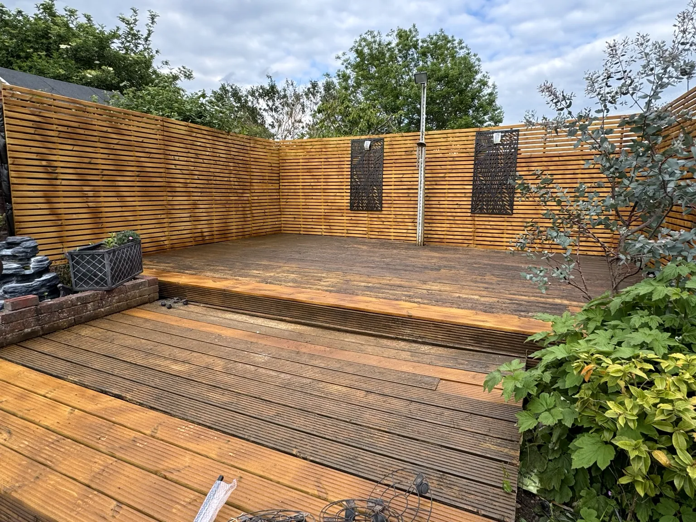
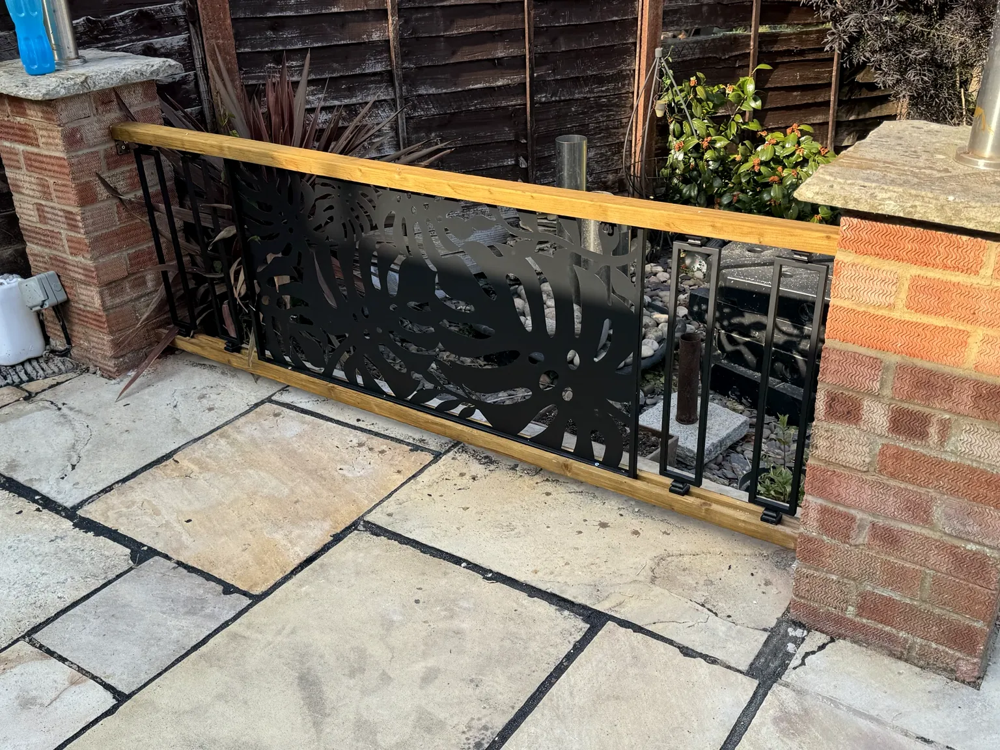
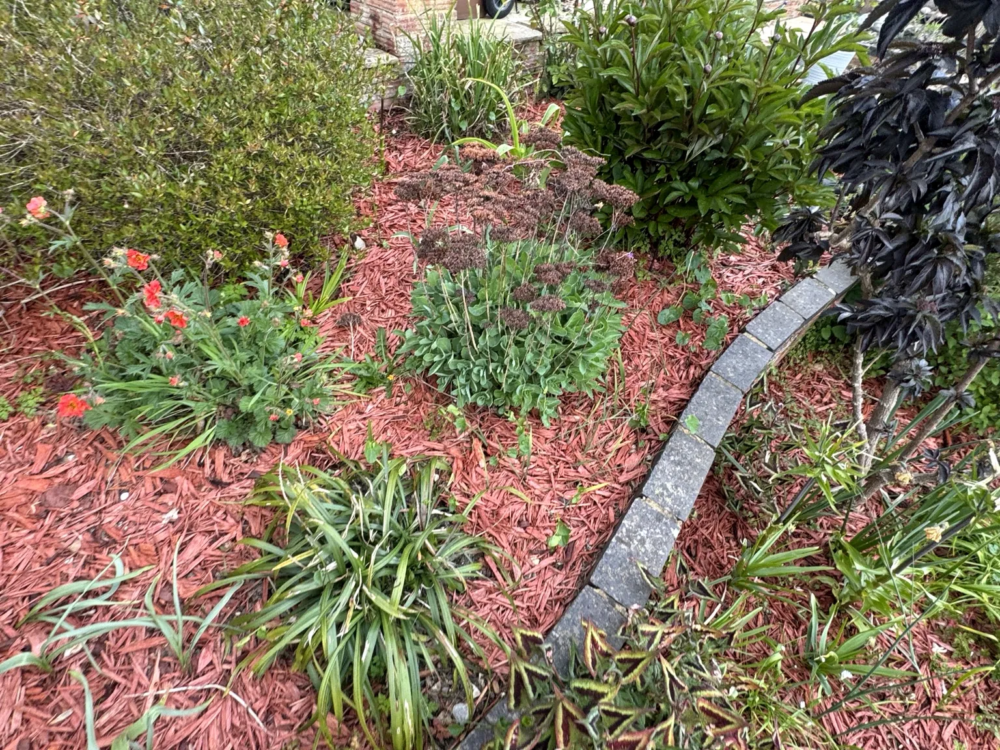
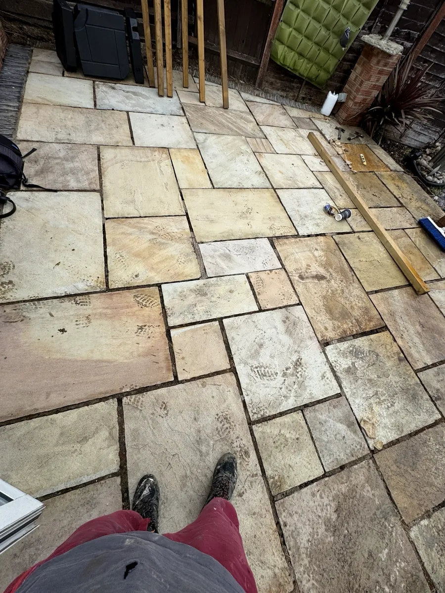
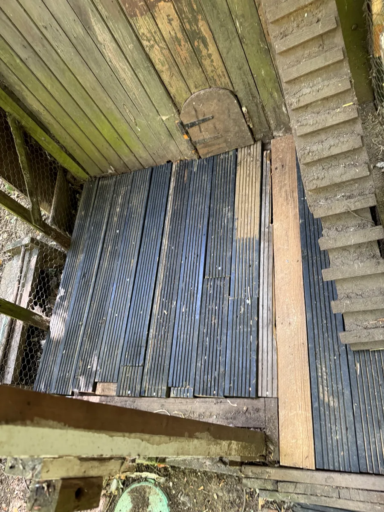
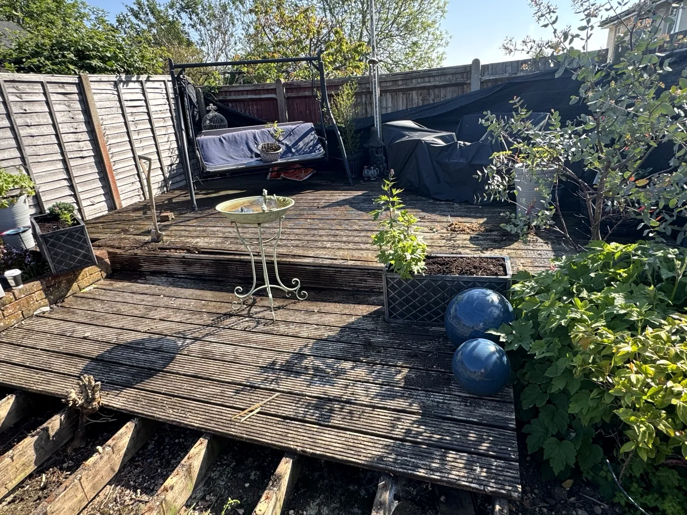

Painting & decorating
Interior and exterior preparation, painting, touch-ups and finishing for a clean, durable result.
Reliable property maintenance, outdoor improvements and practical repairs—completed with care, clear communication and attention to detail.
Badger Home Maintenance helps homeowners keep their properties safe, attractive and well maintained. Every job is assessed carefully, explained clearly and finished to a high standard.
Interior and exterior preparation, painting, touch-ups and finishing for a clean, durable result.
Lawn care, weeding, pruning, planting, mulching, seasonal tidy-ups and overgrown garden clearance.
New installations, board replacement, structural timber repairs, staining, screening and fence repairs.
Patio repairs, repointing, cleaning, slab replacement and preparation of attractive outdoor spaces.
Shelving, doors, timber repairs, flat-pack assembly, fixtures, fittings and practical household jobs.
Gutter cleaning, small plumbing repairs, tiling, sealing, exterior maintenance and property tidy-ups.
Selected photographs from completed and ongoing customer projects.

Weathered boards were assessed and replaced where required, the deck was restored and treated, and modern slatted screening was installed to create a smart, private outdoor living area.

A bespoke decorative panel and timber handrail fitted securely between existing brick pillars.

Careful weeding, pruning and fresh decorative mulch while preserving established plants and bulbs.

Loose and deteriorated joints were cleared and repointed to improve the finish and long-term stability.

Rotten flooring was removed and replaced with a safer, more durable surface suited to the outdoor setting.

Badger Home Maintenance is based in Hemel Hempstead and provides dependable maintenance for homes and gardens. Customers receive straightforward advice, fair quotations and respectful service from first contact to completion.
Send a short description and, where possible, photographs or measurements. We will respond to discuss the work and arrange a suitable time.